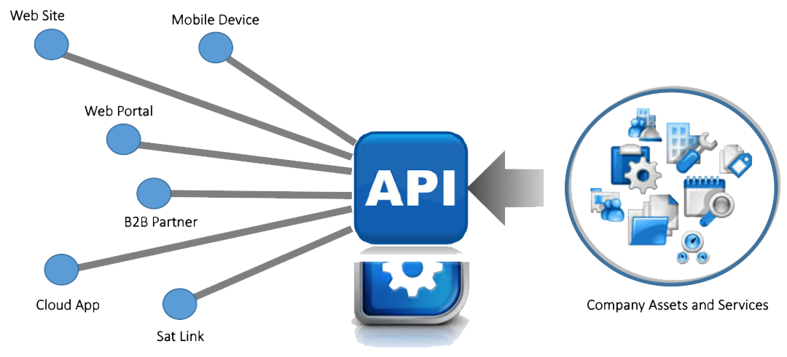
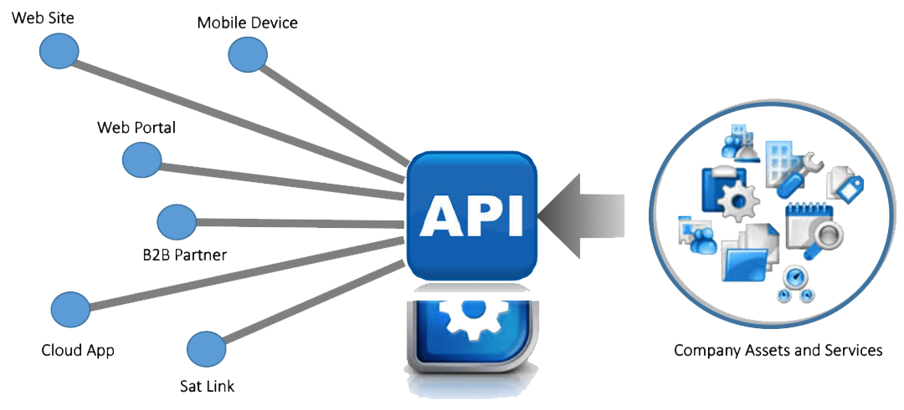

银行API网关
主要针对银行及外部系统对接、形成银行内容开发平台，统一解决：认证、鉴权、安全、流量管控、缓存、服务路由，协议转换、服务编排、熔断、灰度发布、监控报警等。为银行提供统一的对外的API入口，为银行的暴露的API保驾护航，为合作伙伴接入提供方便，快速构建起基于API的生态体系。。


主要针对银行及外部系统对接、形成银行内容开发平台，统一解决：认证、鉴权、安全、流量管控、缓存、服务路由，协议转换、服务编排、熔断、灰度发布、监控报警等。为银行提供统一的对外的API入口，为银行的暴露的API保驾护航，为合作伙伴接入提供方便，快速构建起基于API的生态体系。。
